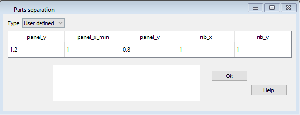
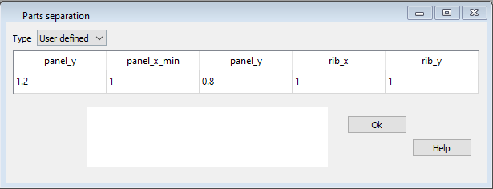

Teile Separierung¶
Während dem Prozessieren separiert der Prozessor alle Teile in der DXF Datei so dass sie sich nicht berühren. Je nach Weiterverarbeitung der Zeichnung kann es aber nötig sein die Abstände zwischen den einzelnen Teilen anzupassen.
Im Fenster Teile Separierung kann diese Anpassung vorgenommen werden. Ein Koeffizient von 1.0 bedeutet dass die Separierung nicht verändert wird. Ein Koeffizient > 1 bewirkt eine Vergrösserung des Abstandes, ein Koeffizient < 1.0 dementsprechend eine Verkleinerung.
 

{kind=link}
Rohdaten:
***************************************************
* 32. PARAMETERS FOR PARTS SEPARATION
***************************************************
1
panel_x 1.2
panel_x_min 1.3
panel_y 1.4
rib_x 1.5
rib_y 1.6
parameter6 1.0
parameter7 1.0
parameter8 1.0
parameter9 1.0
parameter10 1.0
Typ¶
Teile Separierung ist eine optionale Einstellung. Wenn du die Grundwerte übernehmen willst, benutze die Einstellung Standard.
panel_x¶
Separierungsfaktor für die Panels in x-Richtung.
panel_x_min¶
Separierungsfaktor für die Mindestseparierung der Panels in x-Richtung.
panel_y¶
Separierungsfaktor für die Panels in y-Richtung.
rib_x¶
Separierungsfaktor für die Rippen in x-Richtung.
rib_y¶
Separierungsfaktor für die Rippen in y-Richtung.
parameter6…10¶
Diese Parameter werden aktuell nicht verwendet. Wenn du die Datei manuell bearbeitest muss ein gültiger Wert gesetzt werden. Verwendest du Lepg, dann werden die Werte im Hintergrund automatisch richtig gesetzt.
Eine detaillierte Beschreibung in englisch findest Du auf der Laboratori d'envol website.